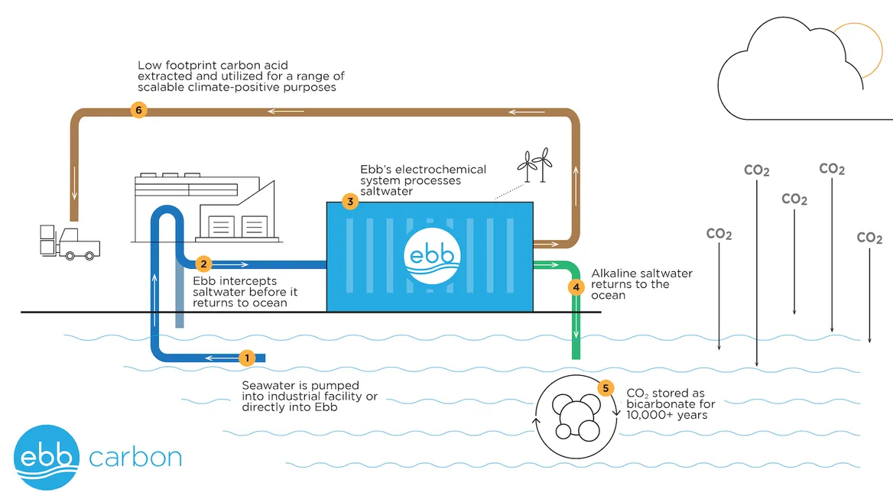

31 CSS - Carbon Capture and Storage
CSS Status 2022
The recent uptick in CCS comes from early-stage project development. Actual operational capacity has grown at a much slower pace in recent years: In 2022, there were only 30 facilities operating around the world, with a combined capacity of just over 42 million metric tons, according to the Global CCS Institute, about 31 percent more than five years earlier. That’s because between 2010 and 2017, numerous projects in the pipeline were shelved and never built due to failures and cost overruns.
The recent growth is driven in part by new U.S. policies incentivizing carbon capture and removal, moves significant enough that BloombergNEF estimates the country could host nearly half of all global CCS capacity by 2030. The Infrastructure Investment and Jobs Act, passed in 2021, includes $3.5 billion in funding for direct-air-capture regional hubs, plus additional funding for other carbon-capture projects. And the landmark 2022 Inflation Reduction Act also includes incentives for carbon capture in the form of tax credits of up to $85 per metric ton of captured CO2. Experts say these new incentives will bring the costs down enough in the U.S. to make the tech workable, possibly solving one key barrier.
“CCS” is an umbrella term for a set of technologies that captures CO2 emitted by a process and diverts it from entering the atmosphere, although this report also includes nascent carbon-removal technologies like direct air capture, which pull CO2 directly from the environment. Most operational CCS facilities are in fossil-gas processing, but new technologies and applications are currently in the works, including in hydrogen and fertilizer production, among other industrial applications.
As of September 2022, there were 164 commercial CCS projects in the development pipeline, with enough combined capacity to capture nearly 200 million metric tons of carbon dioxide annually. In terms of overall planned capacity, the pipeline in 2022 was more than seven times bigger than at its low point in 2017. The largest increase is in the number of projects in an advanced stage of development, which nearly doubled between 2021 and 2022.
But despite the new wave of interest, the Global CCS Institute and the International Energy Agency have both called current efforts on CCS insufficient. Under a net-zero scenario, global operational CCS capacity would need to scale up to over 1,200 million metric tons by 2030, per IEA projections — a tremendous amount of growth that, even if achieved, would still mitigate only a tiny sliver of global CO2 emissions.
[Olano (2023) Chart: Carbon capture and removal projects hit a record high in 2022] (https://www.canarymedia.com/articles/carbon-capture/chart-carbon-capture-and-removal-projects-hit-a-record-high-in-2022)
Tyndall Report:
CCS, as the technology is known, is designed to strip out carbon dioxide from the exhaust gases of industrial processes. These include gas- and coal-fired electricity generating plants, steel-making, and industries including the conversion of natural gas to hydrogen, so that the gas can then be re-classified as a clean fuel.
The CO2 that is removed is converted into a liquid and pumped underground into geological formations that can be sealed for generations to prevent the carbon escaping back into the atmosphere.
It is a complex and expensive process, and many of the schemes proposed in the 1990s have been abandoned as too expensive or too technically difficult.
Currently (2020) there are only 26 CCS plants operating globally, capturing about 0.1% of the annual global emissions from fossil fuels.
Ironically, 81% of the carbon captured to date has been used to extract more oil from existing wells by pumping the captured carbon into the ground to force more oil out. This means that captured carbon is being used to extract oil that would otherwise have had to be left in the ground.
CCS features prominently in many energy and climate change scenarios, and in strategies for meeting climate change mitigation targets.
It is the cumulative emissions from each year between now and 2030 that will determine whether we are to achieve the Paris 1.5°C goal. With carbon budgets increasingly constrained we cannot expect CSS to make a meaningful contribution to 2030 climate targets.
31.1 CSS Unrealistic Costs
Hansen
The required negative emissions (CO 2 extracted from the air and placed in permanent storage) must be larger than the desired atmospheric CO2 reduction by a factor of about 1.7.
The required CO2 extraction is 2.1 ppm, which is 7.6 GtC. Based on a pilot carbon capture plant built in Canada, Keith estimates an extraction cost of $450-920 per tC, as clarified elsewhere. Keith’s cost range yields an extraction cost of $3.4-7.0 trillion. This is for excess emissions in 2022 only; it is an annual cost. Given the difficulty the UN faced in raising $0.1 trillion for climate purposes and the growing annual emissions gap, this example shows both the need to reduce emissions as rapidly as practical and the fact that carbon capture cannot be viewed as the solution, although it may play a role in a portfolio of policies, if its cost is driven down.
Climate policy under the Framework Convention demonstrably fails to curb and reverse growth of GHGs. Exhortations at UN meetings, imploring reduced emissions, have limited global effect.
31.2 CSS will not work as planned and is a dangerous distraction
Instead of financing a technology they can neither develop in time nor make to work as claimed, governments should concentrate on scaling up proven technologies like renewable energies and energy efficiency.
The technology has not lived up to expectations. Instead of capturing up to 95% of the carbon from any industrial process, rates have been as low as 65% when they begin and have only gradually improved.
CCS won’t work (ClimateNewsNetwork)
Global operational CCS capacity is currently 39MtCO2 per year, this is about 0.1% of annual global emissions from fossil fuels.
There are just 26 operational CCS plants in the world, with 81% of carbon captured to date used to extract more oil via the process of Enhanced Oil Recovery [EOR], and at this stage CCS planned deployment remains dominated by EOR. Financing of these CCS projects has relied on the increased revenue from EOR,
CCS is not capable of operating with zero emissions. Many projections assume a capture rate for CCS of 95%, however, capture rates at that level are unproven in practice.
Current capacity in the energy sector is just 2.4 MtCO 2 a year. This compares to the International Energy Agency’s (IEA) estimate of 310 MtCO 2 a year in the energy sector by 2030, an increase of 129 times from today.
Reliance on CCS is not a solution to the climate emergency.
Tyndall Centre Report (pdf Summary) (pdf Report)
But the industry do not agree:
When CCS was first touted, it was seen as a way of cleaning up electricity generated by fossil fuels, in particular those burning coal. But now it is clear it can play a key role in cleaning up other industries.
The opposition to CCS technology from some campaigners seems driven by a hatred of fossil fuel companies that is preventing a level-headed understanding of how we can stop climate change.
31.3 CSS and DAC cause more Damage than Good
Spending money on carbon capture and storage or use (CCS/U) and synthetic direct air capture and storage and use (SDACCS/U) increases carbon dioxide equivalent (CO2e) emissions, air pollution, and costs relative to spending the same money on clean, renewable electricity replacing fossil or biofuel combustion.
The low net capture rates are due to uncaptured combustion emissions from natural gas used to power the equipment, uncaptured upstream emissions, and, in the case of CCU, uncaptured coal combustion emissions. Moreover, the CCU and SDACCU plants both increase air pollution and total social costs relative to no capture. Using wind to power the equipment reduces CO2e relative to using natural gas but still allows air pollution emissions to continue and increases the total social cost relative to no carbon capture. Conversely, using wind to displace coal without capturing carbon reduces CO2e, air pollution, and total social cost substantially. Further, using wind to displace coal reduces more CO2e than using the same wind to power the capture equipment. As such, spending money on wind powering carbon capture always increases CO2e compared with spending on the same wind replacing fossil fuels or biofuels. In sum, CCU and SDACCU increase or hold constant air pollution health damage and reduce little carbon before even considering sequestration or use leakages of carbon back to the air. Spending on capture rather than wind replacing either fossil fuels or bioenergy always increases CO2e, air pollution, and total social cost substantially. No improvement in CCU or SDACCU equipment can change this conclusion while fossil power plant emissions exist, since carbon capture always incurs an equipment cost never incurred by wind, and carbon capture never reduces, instead mostly increases, air pollution and fuel mining, which wind eliminates. Once fossil power plant emissions end, CCU (for industry) and SDACCU social costs need to be evaluated against the social costs of natural reforestation and reducing nonenergy halogen, nitrous oxide, methane, and biomass burning emissions.
31.4 BECCS
BECCS, rapidly emerged as the new saviour technology. By burning “replaceable” biomass such as wood, crops, and agricultural waste instead of coal in power stations, and then capturing the carbon dioxide from the power station chimney and storing it underground, BECCS could produce electricity at the same time as removing carbon dioxide from the atmosphere. That’s because as biomass such as trees grow, they suck in carbon dioxide from the atmosphere. By planting trees and other bioenergy crops and storing carbon dioxide released when they are burnt, more carbon could be removed from the atmosphere.
BECCS, just like all the previous solutions, was too good to be true.
Across the scenarios produced by the Intergovernmental Panel on Climate Change (IPCC) with a 66% or better chance of limiting temperature increase to 1.5°C, BECCS would need to remove 12 billion tonnes of carbon dioxide each year. BECCS at this scale would require massive planting schemes for trees and bioenergy crops.
The Earth certainly needs more trees. Humanity has cut down some three trillion since we first started farming some 13,000 years ago. But rather than allow ecosystems to recover from human impacts and forests to regrow, BECCS generally refers to dedicated industrial-scale plantations regularly harvested for bioenergy rather than carbon stored away in forest trunks, roots and soils.
Currently, the two most efficient biofuels are sugarcane for bioethanol and palm oil for biodiesel – both grown in the tropics. Endless rows of such fast growing monoculture trees or other bioenergy crops harvested at frequent intervals devastate biodiversity.
It has been estimated that BECCS would demand between 0.4 and 1.2 billion hectares of land. That’s 25% to 80% of all the land currently under cultivation. How will that be achieved at the same time as feeding 8-10 billion people around the middle of the century or without destroying native vegetation and biodiversity?
Growing billions of trees would consume vast amounts of water – in some places where people are already thirsty. Increasing forest cover in higher latitudes can have an overall warming effect because replacing grassland or fields with forests means the land surface becomes darker. This darker land absorbs more energy from the Sun and so temperatures rise. Focusing on developing vast plantations in poorer tropical nations comes with real risks of people being driven off their lands.
And it is often forgotten that trees and the land in general already soak up and store away vast amounts of carbon through what is called the natural terrestrial carbon sink. Interfering with it could both disrupt the sink and lead to double accounting.
31.5 CDR - Mitigation Deterrence
Grant Abstract
Carbon Dioxide Removal (CDR) features heavily in low-carbon scenarios, where it often substitutes for emission reductions in both the near-term and long-term, enabling temperature targets to be met at lower cost. There are major concerns around the scale of CDR deployment in many low-carbon scenarios, and the risk that anticipated future CDR could dilute incentives to reduce emissions now, a phenomenon known as mitigation deterrence. Here we conduct an in-depth analysis into the relationship between emissions reduction and emissions removal in a global integrated assessment model. We explore the impact of CDR on low-carbon scenarios, illustrating how the pathway for the 2020s is highly sensitive to assumptions around CDR availability. Using stochastic optimisation, we demonstrate that accounting for uncertainty in future CDR deployment provides a strong rationale to increase rates of mitigation in the 2020s. A 20% chance of CDR deployment failure requires additional emissions reduction in 2030 of 3–17 GtCO 2 . Finally, we introduce new scenarios which demonstrate the risks of mitigation deterrence and the benefits of formally separating CDR and emissions reduction as climate strategies. Continual mitigation deterrence across the time-horizon leads to the temperature goals being breached by 0.2–0.3 ◦ C. If CDR is treated as additional to emissions reduction, up to an additional 700–800 GtCO 2 can be removed from the atmosphere by 2100, reducing end-of-century warming by up to 0.5 ◦ C. This could put sub-1.5 ◦ C targets within reach but requires that CDR is additional to, rather than replaces, emission reductions.
Grant Memo
In almost all modelled scenarios, the role of CDR is limited to facilitating greater fossil fuel consumption.
Near-term emission reductions should not be substituted for uncertain future con- tributions to decarbonisation. Low-carbon scenarios must not dilute the pressure for systemic change or lead decision makers to underestimate the poten- tial for action now.
Grant (2021) Confronting mitigation deterrence in low-carbon scenarios (pdf)
energypost.eu (2021) What if Carbon Capture fails? Modelling the consequences and solutions
31.6 CCS - Not a Climate Solution
Sekara
Seven large-scale CCS projects have been attempted at U.S. power plants, each with hundreds of millions of dollars of government subsidies, but these projects were either canceled before they reached commercial operation or were shuttered after they started due to financial or mechanical troubles. There is only one commercial-scale CCS power plant operation in the world, in Canada, and its captured carbon dioxide is used to extract more oil from wells – a process called “enhanced oil recovery.”
In industrial facilities, all but one of the dozen CCS projects in the U.S uses the captured carbon dioxide for enhanced oil recovery.
This expensive oil extraction technique has been described as “climate mitigation” because the oil companies are now using carbon dioxide. But a modeling study of the full life cycle of this process at coal-fired power plants found it puts 3.7 to 4.7 times as much carbon dioxide into the air as it removes.
31.7 CO2 Direct Air Capture DAC
Sekara
Another method would directly remove carbon dioxide from the air. Oil companies like Occidental Petroleum and ExxonMobil are seeking government subsidies to develop and deploy such “direct air capture” systems. However, one widely recognized problem with these systems is their immense energy requirements, particularly if operating at a climate-significant scale, meaning removing at least 1 gigaton – 1 billion tons – of carbon dioxide per year.
That’s about 3% of annual global carbon dioxide emissions. The U.S. National Academies of Sciences projects a need to remove 10 gigatons per year by 2050, and 20 gigatons per year by century’s end if decarbonization efforts fall short.
The only type of direct air capture system in relatively large-scale development right now must be powered by a fossil fuel to attain the extremely high heat for the thermal process.
A National Academies of Sciences study of direct air capture’s energy use indicates that to capture 1 gigaton of carbon dioxide per year, this type of direct air capture system could require up to 3,889 terawatt-hours of energy – almost as much as the total electricity generated in the U.S. in 2020. The largest direct air capture plant being developed in the U.S. right now uses this system, and the captured carbon dioxide will be used for oil recovery.
Another direct air capture system, employing a solid sorbent, uses somewhat less energy, but companies have struggled to scale it up beyond pilots. There are ongoing efforts to develop more efficient and effective direct air capture technologies, but some scientists are skeptical about its potential. One study describes enormous material and energy demands of direct air capture that the authors say make it “unrealistic.” Another shows that spending the same amount of money on clean energy to replace fossil fuels is more effective at reducing emissions, air pollution and other costs.
31.8 Smokestack CO2 removal
Clifford
Scientists at Pacific Northwest National Lab have developed a technique that is able to pull carbon dioxide out of the exhaust flue of a power plant or factory for $39 per metric ton, the cheapest cost every reported in a peer-reviewed scientific journal.
To construct a factory to pull carbon dioxide out of the factory exhaust flue with this technique and at this price would cost $750 million.
In an effort to provide economic incentive for companies to install such a system, PNNL researchers have developed a way to generate methanol, which is a commonly sought after ingredient on its own right, during the process.
The new technique discovered by the Pacific Northwest National Laboratory costs $39 per metric ton and is the cheapest technique for this kind of carbon capture ever reported in a peer-reviewed scientific journal. For comparison, it costs $57 per metric ton to capture carbon dioxide from a coal-fired power plant using current state-of-the-art technology, PNNL says.
We have the technology to be able to capture carbon dioxide from those industrial point sources. And sitting around waiting for 20 years until we have the next-generation steel technology that doesn’t generate carbon dioxide emissions doesn’t make a lot of sense.
PNNL’s technique removes carbon dioxide at the source, rather than sucking it out of the air. The technique of vacuuming up existing CO2 out of the air is known as direct carbon capture, and is exemplified by the Swiss company Climeworks. Direct air capture may be necessary to combat climate change, since there is already so much carbon dioxide in the atmosphere, but it’s much more expensive than removing CO2 at the source.
From a societal perspective, capturing it before it ever gets out there, when it’s $39 a ton to capture, versus capturing it when it’s already in the atmosphere for $200-plus a ton, makes a lot more sense.
PNNL’s technique uses solvent chemistry. The dirty gas comes out of the power plant or factory and is moved into a very large chamber. At the same time, a liquid is sprayed down from the top of the chamber. The gas rises and the liquid falls and the two substances mix. Treated gas leaves out of the top of the chamber and liquid containing the CO2 is siphoned away. That liquid is heated until the CO2 is released as a gas. The CO2 is compressed for transportation, where the majority of it will be stored. The remaining liquid, with the CO2 gas removed, is cooled and sent back to the first stage of the process.
This system is very large. It pumps 4 million liters of liquid per hour.
The PNNL system is cheaper than other carbon capture systems because its it operates with 2 percent water, as opposed to as much as 70 percent water, which is the upper boundary for previous and similar carbon capture technologies. It takes a long time and a lot of energy to boil water, so by removing the water from the system, the carbon capture process becomes much cheaper.
Even with this innovation, a carbon capture system takes a lot of energy. That energy comes from the power plant where the carbon capture system is attached.
An installed carbon capture machine will use as much as 30 percent of the energy that a power plant generates to remove 90 percent of the carbon dioxide. This is called the “parasitic load” of the carbon capture technology. To get back to full energy capacity, the power plant would have to burn more energy. Even so, the technique would ultimately translate to a net carbon dioxide reduction of 87 percent on a per-megawatt net power generation basis.
These carbon capture systems are large and expensive: To tack one onto a power reactor would cost $750 million. Without strict government mandates or financial incentives, power plant or factory owner operators will have little reason to spend that money.
In an effort to make this technology more economically attractive, PNNL researchers have developed a smaller modular reactor that would pump one to two percent of the solvent from the carbon capture system into another smaller modular reactor and use it to make a product that companies can sell.
If we can give an economic incentive — if they can convert just 1 percent of the carbon dioxide that they’re capturing in one of these big facilities, then perhaps the factories can “sell enough of things like methanol, or methane or other types of carbonate products to at least provide a financial incentive, so they would actually want to build the capture unit in the first place-
They’re starting with methanol, which currently costs $1.20 per gallon. That means 20 gallons of methanol produced would pay for a metric ton of carbon dioxide to be captured. For some sense of scale, the United States emitted 4.7 billion metric tons of carbon dioxide in 2020.
We chose methanol because it’s probably the third- or fourth-largest chemical made by man. Methanol is used in hundreds of common products including plastics, paints, car parts and construction materials. It can also be a source of energy for trucks, buses, ships, fuel cells, boilers and cook stoves.
If we can start replacing fossil-produced methanol with carbon-dioxide-derived methanol, that can at least start being a part of a carbon-negative chemical approach to manufacture fuels and chemicals, as opposed to carbon-positive by just taking synthesis gas from fossil fuels.
Converting carbon dioxide to methanol does not consume a lot of energy. But it does require hydrogen, which itself takes energy to produce.
While some small percentage of the carbon dioxide could be siphoned off to make a product, like methanol, the rest will have to be sequestered.
The volumes of carbon dioxide that will need to be sequestered are “staggering.” Generally, sequestering carbon dioxide is a lot cheaper than capturing it in the first place. More than half of carbon dioxide sequestration in the U.S. on land is estimated to be less than $10 per ton.
31.9 OCR - Ocean-based Carbon Removal
Takemura
Two Israeli companies, Rewind and BlueGreen Water Technologies, have carved out a niche for themselves in the nascent field of aquatic carbon removal. Both companies are betting they can lock away more CO2 per year more quickly and with less capital investment by taking readily available biomass and sinking it to the bottom of large bodies of water.
Rewind want to collect plants and transport them into the bottom of the Black Sea.
The vast body of water of the Black sea could, in theory, function as a carbon-storage vault. It has an anoxic zone below a depth of about 150 meters that is devoid of oxygen and high in hydrogen sulfide concentrations. These conditions inhibit microbes that depend on oxygen to decompose biomass into CO2, thus creating an environment that preserves organic matter very well.
Sixty astonishingly well-preserved sunk ships lie at the bottom of the Black Sea, their wooden hulls, masts and rudders virtually unravaged by time and decomposing microbes. One ancient Greek ship has lain undisturbed for the last 2,400 years.
Rewind intends to work with countries’ agriculture and forestry industries to collect and transport biomass to the Black Sea. The company calculates the cost in emissions of doing this would be just 3 percent of what the company can sequester. And far from filling up the Black Sea, all that organic matter, Rewind estimates, would take up less than 0.1 percent of the sea’s volume.
The company is striving to sequester a gigaton per year by 2030, initially at $200 per ton of CO2 then decreasing to $80 per ton of CO2 once Rewind has optimized its supply chain.
One crucial question that has yet to be resolved: Will that carbon really stay put?
While the bottom of the Black Sea is devoid of oxygen, that doesn’t mean it’s devoid of life. Microbes called methanogens inhabit its depths that can devour organic matter in anoxic environments. When that happens, they release carbon-containing methane (CH4), a greenhouse gas that is shorter-lived than CO2 but 84 times more potent over a 20-year timeframe.
Is there going to be any kind of interaction between those microbes and the biomass?[…] Is there going to be any leakage of other types of greenhouse gases?
BlueGreen Water Technologies takes a different approach to aquatic carbon removal. Instead of collecting material grown on land and sinking it underwater, the company is sinking biomass already teeming in aquatic environments: harmful algal blooms made up of cyanobacteria, also known as blue-green algae.
Cyanobacterial blooms wreak havoc on ecosystems. Caused by warming waters and excess nutrients, they can choke aquatic environments, creating dead zones with oxygen levels too low to sustain fish and other aquatic life. Cyanobacterial blooms also produce toxins that can harm people and animals. The good news is…they also suck a lot of carbon out of the atmosphere.
The company administers a buoyant powder containing hydrogen peroxide, whichtriggers programmed cell death or cyanobacterial suicide. The treatment clears afflicted waters in just a day or two. While some of the algal bloom decomposes in the water and returns to the atmosphere as CO2, some remnants fall to the sediment and stay there.
the climate benefits of BlueGreen’s technique could be undermined — or even canceled out — by the potential to increase methane emissions.
Methane is such a potent greenhouse gas that if a pile of fixed carbon dioxide (i.e., dead algae) lost just 1.2 percent as methane, that would more than offset the climate benefit of the remaining 98.8 percent of carbon that remained sequestered. So an approach that increases methane emissions even just a little immediately turns into a bad deal for the atmosphere.
Takemura (2023) Can we fight climate change by sinking carbon into the sea?
31.9.1 Ebb
Gallucci
The California startup is operating a first-of-a-kind system at a Pacific coast lab to bring more scientific certainty to nascent ocean carbon removal.
At a waterfront lab in Sequim Bay, a quiet inlet on Washington’s Olympic Peninsula, the startup Ebb Carbon is trying to answer a crucial question for the climate: Can we supercharge the ocean’s role as a carbon sink to help limit global warming?
The California-based company recently began operating its novel “marine carbon dioxide removal” system at the Sequim facility, which is run by the Department of Energy’s Pacific Northwest National Laboratory (PNNL). Ebb’s technology uses electrochemistry to split saltwater into its acidic and alkaline parts. The long-term plan is to return alkalinity to the ocean, creating chemical reactions that pull CO2 from the air and store it safely in the sea.
“We’re essentially accelerating a natural process,” Ben Tarbell, CEO and co-founder of Ebb Carbon, told Canary Media. “So instead of taking millions of years [to happen], it takes weeks to months.”
Its first-of-a-kind demonstration project, which is designed to remove 100 metric tons of CO2 per year at full capacity. Still figuring out how to accurately quantify and verify just how much CO2 they’re locking away, and for how long.
Ocean-based carbon removal strategies typically fall into one of two categories.
“Biotic” approaches rely on photosynthetic organisms to soak up carbon from the atmosphere and store it as biomass. For example, the Israeli companies Rewind and BlueGreen Water Technologies are taking discarded plant matter and harmful algal blooms, respectively, and sinking them to the bottom of the sea. Ocean fertilization, a theoretical and controversial idea, calls for sprinkling nutrients like iron over seawater to grow CO2-absorbing phytoplankton.
The second category, “abiotic” approaches, involves harnessing the seawater itself. Artificial upwelling refers to pumping nutrient-rich water from the deep ocean to the surface so it can absorb carbon, a process that would naturally happen over longer periods of time. Electrochemical techniques aim to use electricity to either enhance seawater’s ability to store carbon — or to directly extract CO2 from the ocean.

When alkalinity is added to seawater, it reacts with the CO2 in the atmosphere to become bicarbonate, a form of carbon that can stay trapped in the sea for thousands of years — without increasing the ocean’s acidity.
[Galucci (2023) Ebb Carbon wants to pull CO2 from the sky with electricity and seawater](https://www.canarymedia.com/articles/carbon-capture/ebb-carbon-wants-to-pull-co2-from-the-sky-with-electricity-and-seawater
31.10 Thermodynamics of DAC
Dessler
It would require about +8.6 J of energy to separate 400 ppm of carbon dioxide from from 1 mole of air.
It would require about +8.6 J of energy to separate 400 ppm of carbon dioxide from from 1 mole of air.
Now imagine that we want to offset present day emissions by removing 40 billion tons of CO2 from the air each year. This would require about 2x10^19 J each year, which corresponds to an average power of 630 GW.
This is a lot of power — equal to about 300 Hoover Dams or 30 Three Gorges Dams. And this isn’t the end of the energy story.
Compressing 40 billion tons of CO2 from 1 atm to 100 atm requires 10^19 J of work be done on the gas. Spread over a year, this equates to 320 GW, about half the power needed for extracting carbon dioxide from the air.
So, in total, we’re looking at roughly 1 TW of power — about 6% of human society’s total power demand.
[update June 7, 2023: I have been pointed to an estimate of energy required for DAC of 2000 kWh/ton of CO2 by one of the companies trying to commercialize this. That corresponds to 7200 kJ/kg, or 10 times more energy than the thermodynamic limit. In that case, the power required to pull all of our emissions out of the atmosphere each year is close to how much power humans consume.]
This estimate is the thermodynamic limit. In reality, it will be more than this. Exactly how much more will be determined by the engineering going into the process, but it certainly could be a several times this limit. Thus, carbon capture will require an enormous amount of energy.
And this energy better be climate-safe. If you’re generating the energy by burning coal, then you’re better off shutting down the fossil fuel power plants rather than using it for air capture.
Dessler (2023) Thermodynamics of air capture of carbon dioxide